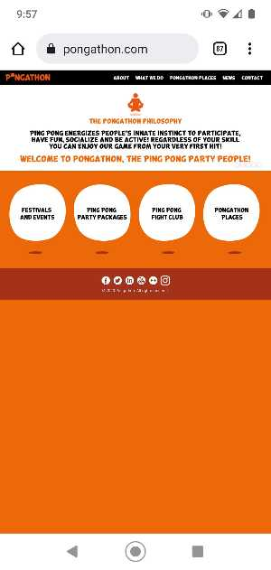

Repetition
Marietta Adventure Company
The Marietta Adventure Company website is a good example of repetition. As I navigated through the site I noticed that the different pages all used the same style for the naviation menu. Also, from this screenshot you can see that the buttons are all the same color, size, shape, and have the same font. If you were to scroll down the page you would see that there are several images with buttons and text overlaid. Each image is the same size. The bottons and font are the same on each image. This repetition helps tie it all together and makes the page look consistent and pleasing to the eye.
Contrast
Pongathon
The Pongathon website is a good example of contrast. The color of the background is very different from the color of the text. This makes the text easy to read. The big buttons on the bottom are much larger than the other items on the page. This makes them stand out and draw the users attention to them. Also when you hover the mouse over them they change to a black background with white text. This give a sharp contrast between the active and non-active buttons.
Proximity
Family Tree Dental
The Family Tree Dental website is a good example of using the proximity design principle. At the top of the page all of the locations are listed together. This helps the user see all of the location information in one place. Also, not far from the location information is the "Schedule Appointment" button. This is placed close to the top of the page, not far from the location information. All of this helps to encourage the visitor to make an appointment and facilitates the process right at the begining of the page. This helps the patient to get the process started for getting the care they need. It also helps the practice get new patients to make an appointment.